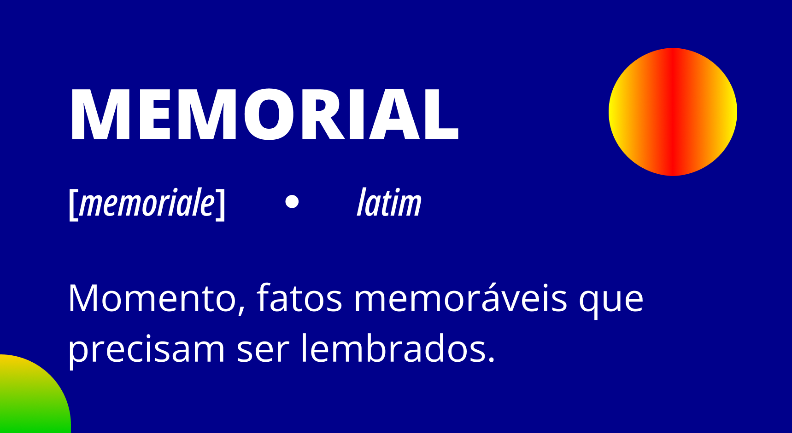

O papel do Memorial na reconstrução de sua trajetória
A palavra Memorial vem do latim Memoriale e significa momento ou fatos memoráveis que precisam ser lembrados.

Título: O conceito de Memorial
Fonte: Prosa (2024m).
Assim, o objetivo deste curso é criar condições para que você, enquanto autor de sua formação, descreva a sua trajetória profissional de forma crítica e reflexiva a partir da sua realidade e das referências encontradas ao longo de seu estudo.

Nesse entendimento, cabe destacar dois elementos fundamentais: a trajetória profissional e a discussão do conhecimento a partir do teor crítico-reflexivo.
É a partir da realidade que se busca a reflexão sobre os fatos do seu cotidiano, as práticas individuais desenvolvidas e as relações sociais e interpessoais estabelecidas com os outros sujeitos atuantes no processo educativo, isto é, com os estudantes, os colegas professores, os diretores, os funcionários, os membros das famílias etc. Assim, busca-se reconstruir sua trajetória profissional compreendendo as complexidades que envolvem o processo de formação e o espaço da escola.
Ao registrar sua percepção e sua memória sobre o que foi - ou sobre o que é - vivido na sua realidade em sala de aula, cada docente construirá significados próprios e destacará os momentos da vida profissional que considerar mais relevantes para analisar a partir de seu aparato teórico. Essa singularidade é um elemento fundamental na condução do processo de ensino-aprendizagem.